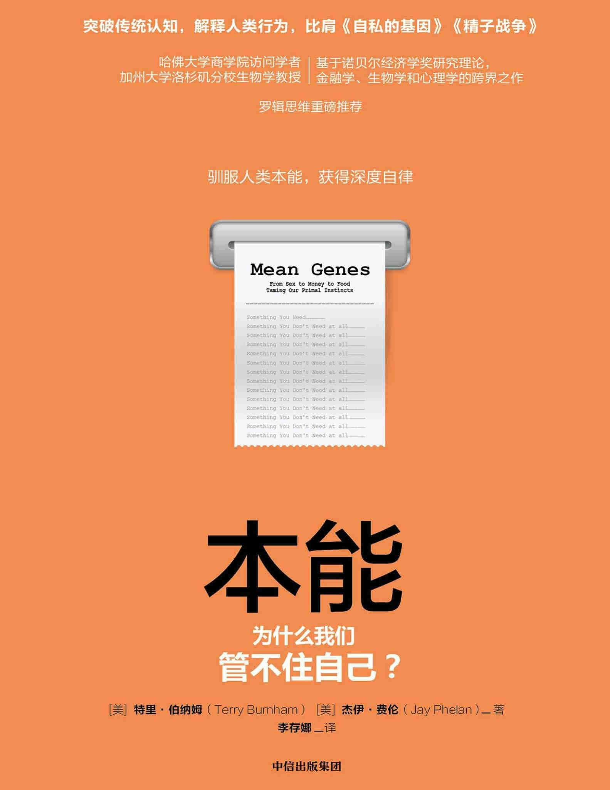

注：【】部分为笔者心得，非原文摘抄。
- 我们不是呆头呆脑，注定只会执行自我基因程序的机器人。
- 最有效的储蓄机制之一是把钱藏起来。
- 大脑总是根据昨天的游戏规则行动，所以我们很容易上当。
- 我们通常对未来的行为总是过度乐观。
- 在做每一个决定时，我们都必须压制内在的反应，并利用习得的金融手段来做出最佳选择。
- 了解我们的弱点可以降低失败的概率，并且防止在最软弱的时候造成损失。
- 【不可纵容本能欲望。】
- 大脑必须通过神经系统的信号才能了解我们的行为，而任何信号系统都可以操控。
- 咖啡因能起作用就是因为它和腺苷很相似。
- 麻醉剂通常会模仿我们身体在正常运转中产生的化学物质。只要我们知道麻醉剂所模仿的分子是什么，其特定效果就是可以预测的。
- 【明知会痛苦，何必要开始？】
- 我们无法控制对麻醉剂的激情，其根源不在于人格缺失，而是由于欲望的强大。
- 我们就是那些离开洞穴、冒险成功的人们的后代。
- 人类在许多风险上的判断失误都有一个共同的原因：我们生活的世界和祖先们的世界已经大不相同了。
- 人们不关心概率，只在乎奖金。
- 控制住自己的关键在于预先采取措施来制约体内的赌棍。
- 深刻而长久的幸福感并非来自物质状况的变化。
- 占有物质的欲望是人类的通病。
- 当我放眼未来，我看到了更多的可能性，而不是局限性。——克里斯托弗·里夫
- 生活的变化带来的强大而短暂的影响或微小但长期的影响，这二者之间的对比形成了人之为人的主要矛盾之一。
- 无论是通过目标的实现，还是因遭挫折而失败，在获得满足感的游戏中，我们永远不是胜者。
- 我们偏爱的是有积极结局的经历。
- 幸福与不幸是基因用来促进其目标实现的工具。
- 只要基因的利益不能完美协调，冲突就不可避免。
- 伴随着高密度人群出现的是各方对有限资源的争夺，而争夺带来的就是冲突。
- 要保持有效的关系，关键之一在于保持利益的均衡。
- 合作是建立在相互的实力之上的。
- 合作需要的是关心、培育以及未来。
- 自我了解加上自我约束能帮助我们找到制胜之法。